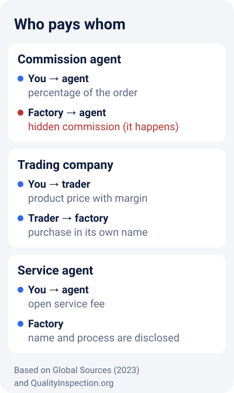
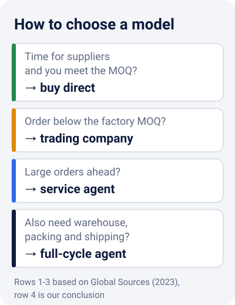

Sourcing Agent, Buyer or Trading Company in China: Differences and How to Choose
Buyers, sourcing agents and trading companies in China often get lumped together, but they work in different ways. Three questions show who you are dealing with: who pays the intermediary, whether you know the factory and whose name the purchase is in. A trading company, for example, buys goods in its own name and resells them to you with a margin2.
Below we cover three intermediary models, how each one gets paid, what to settle in your agreement and what to ask before your first payment.
Do you need an intermediary at all
A "buyer" or "buying agent" is a loose label for anyone who purchases on your behalf. It may refer to a freelance agent, a service company or a trading company's sales manager. So look past the label: what matters is how the person or company handles your money and deals with the factory.
The first question is whether you need help at all. If no one on your team can spend 1-3 hours a day on each supplier tracking what goes on in China, you may need a sourcing agency1. If you have the time and can meet the factory's minimum order quantity (MOQ), buying direct is probably your best choice1.
Three intermediary models in China
Commission agent. Helps find suppliers, makes communication easier and keeps an eye on production. In most cases this is a single person who lives in China2. An agent from your industry saves you time through their network and can represent you on the ground in China1. The main risk is a hidden commission paid by the factory. Renaud Anjoran, who has run a quality assurance company since 2006, writes that most such agents take one1. Because of that, in a dispute the agent often takes the factory's side1.
Trading company. Purchases in its own name, adds a margin and resells; all communication goes through the trader2. It makes sense when your order is below the factory's MOQ: a trading company can put it with a smaller workshop that takes short runs1.
Service agent. Charges a fee for the service and works openly: you know the supplier names and see the process1. You pay for it before production even begins, but it suits buyers who expect large orders later1. The best of them work like your own procurement office1. Keep in mind that Anjoran himself runs a quality assurance company1, so he works in the same market.
| Model | Factory known | How it gets paid |
|---|---|---|
| Commission agent | depends | a percentage of the order, sometimes also a hidden factory commission |
| Trading company | usually not | a margin built into the price, all contact goes through it |
| Service agent | yes | an open service fee, suppliers and process are disclosed |
| Buying direct | yes | no intermediary |

A full-cycle agent goes one step further: on top of sourcing, purchasing and quality control it adds warehousing, packing and shipping. That is how we work. If you want one contractor for the whole journey of your goods, send us a request.
Sourcing agent fees: how intermediaries get paid
An intermediary can earn in four ways, and they are often combined:
- A percentage of the order. A 2011 blog post put the usual agent fee at 5-10% of the FOB price, paid after the final payment2. FOB is an Incoterms 2020 rule for sea transport, used with a named port of loading3. The figure is old: today the rate is negotiated separately with each intermediary.
- A margin in the price. This is how a trading company works2. Its income is built into the product price, and you do not see it separately.
- A flat service fee. This is how a service agent works1.
- A commission from the factory. The factory pays it, and the buyer may not even know about it1.
So start by asking the intermediary who pays them and how1. The size of the fee comes second. If part of their income comes from the factory, their interests may diverge from yours in a dispute over defects or deadlines.
Whose name is the factory contract in
The key point in your agreement with an intermediary is whose name they use to buy from the factory. If they buy in your name, your company is named as the buyer in the factory contract. If they buy in their own name, as a trading company does2, the factory contract is signed by them, not by you.
Write down in your agreement whose name the purchase is in and who pays the factory. Whether you can bring claims against the factory yourself depends on the law that governs the factory contract and your agreement with the intermediary. Check this with a lawyer before you sign.
What to ask an intermediary before your first payment
Most of these questions come from Renaud Anjoran's list for choosing an agent1; we added the first two ourselves, based on the contract section above:
- Whose name will the factory contract be in, and on whose behalf do you pay the factory?
- Will I know the factory's name?
- Who pays you, and how? Do you receive anything from the factory?
- Can I visit the factory before or during production?
- Can I talk to your clients who buy similar products?
- Who checks quality: you or a third party? Will I get a report after every inspection?
- Will you update me on production every week?
- What will you do if a supplier cheats, misses a deadline or ships defective goods?
- Do you work in the region where my product is made?
- Will your service cost less on repeat orders of the same product?
How a pre-shipment inspection works and what the report should contain is covered in our article on quality inspection in China.

How FBL Group works
We are your representative and partner in China: sourcing, purchasing, manufacturing, quality control, warehousing, fulfillment and shipping. Our office is in Foshan, and we also work with suppliers in Guangzhou and Yiwu. You can read more about us on the about page.
Receiving, inspection, labeling and packing at our warehouse are described on the fulfillment page. Why cargo can be delayed and how to build in a time buffer is covered in our article on why shipments from China get delayed.
In short
- "Buyer" is a loose label. Look at the model: commission agent, trading company or service agent.
- Ask how the intermediary gets paid and by whom, and whether they take money from the factory.
- Find out whose name the factory contract is in and which law governs it, and write it into your agreement.
- An order below the factory's MOQ points to a trading company; if you expect large orders, look at a service agent.
- If you also need warehousing, packing and shipping, choose a full-cycle agent.
To discuss purchasing, quality control and shipping for your product, send us a request.
*This article is for information only and is not legal advice. The terms of working with an intermediary are set by your agreement with them.*
Sources
- Global Sources, Renaud Anjoran. Sourcing from China 101, part 1: Do you need a sourcing agent? — updated December 1, 2023.
- QualityInspection.org, Renaud Anjoran. Agent vs. trader vs. importer: what differences? — March 29, 2011.
- International Trade Administration (US). Know Your Incoterms — Incoterms 2020 rules.
Links checked on 20 November 2026. This article is general guidance, not legal advice.